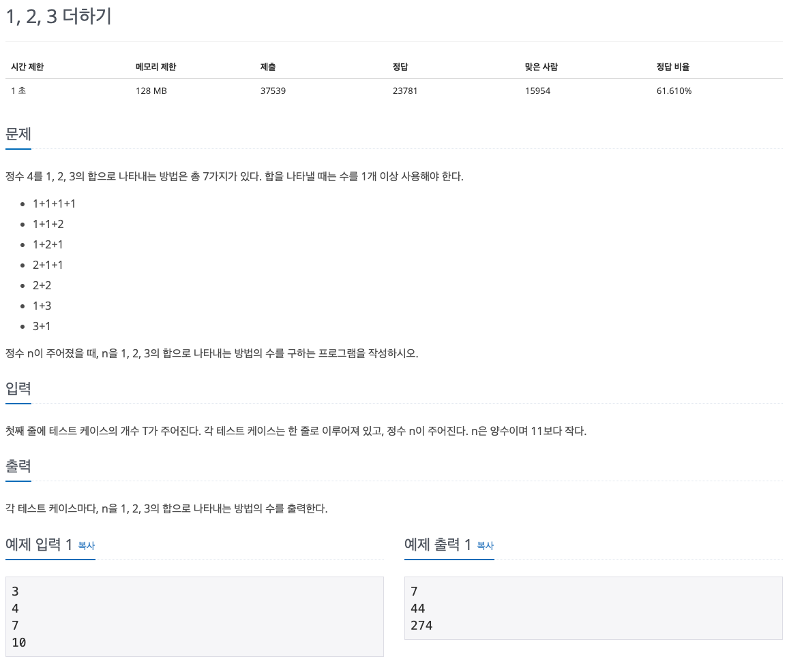

백준 문제 풀이: 9095 - 1, 2, 3 더하기

문제 파악
1, 2, 3의 합으로 나타내는 방법에는 순서가 다른 것도 다른 방법으로 취급한다.
또한, 수는 총 1개 이상이므로, 자기 자신만 존재하는 것도 하나의 방법으로 취급해야 함을 유의한다.
문제 풀이
입력된 정수가 커질수록 합으로 나타내는 경우의 수는 기하급수적으로 커진다. 또한, 그 방법을 수식으로 표현할 방법조차 아주 복잡하거나 불가능하다. 이때, 유용한 방법이 동적 계획법이다.
동적 계획법(Dynamic Programming)은 큰 문제를 작은 문제로 쪼개어, 작은 문제의 해답을 이용해 큰 문제를 해결하는 방법이다. 이때, 작은 문제들의 해답으로 큰 문제의 해답을 구할 수 있는 반복 구조여야 적용이 가능하다. 또한, 작은 문제들의 해답을 미리 저장하고, 동일한 해답이 다시 필요한 경우 재활용함으로써, 속도를 최적화할 수 있다.
주어진 문제가 동적 계획법을 이용할 수 있는지, 정수 4를 1, 2, 3의 합으로 나타내는 방법에 대한 예시를 분석해보자.
- 맨 앞에 수를 하나 두면, 나머지 부분은 주어진 수에 앞에 둔 수를 빼고 동일한 방법을 적용해 구성할 수 있다.
- 맨 앞에 올 수 있는 수는 1, 2, 3의 3가지 수뿐이다.
예시에 적용해보면, 다음과 같다.
맨 앞에 1이 있으면, 나머지 부분은 4에서 1을 뺀 3에 동일한 방법을 적용할 수 있다.
맨 앞에 3이 있으면, 나머지 부분은 4에서 3을 뺀 1에 동일한 방법을 적용할 수 있다.
이는 동일한 문제가 작은 수에 대해 반복적인 것을 알 수 있다. 주어진 수는 작은 수들의 문제로 쪼개지고, 그 작은 수들은 또 작은 수들의 문제로 쪼개지고, 결국은 최소에 해당하는 초기값까지 쪼개질 것이다. 우리는 초기값을 쉽게 구할 수 있으므로, 거꾸로 작은 수부터 해답을 찾아가면, 최종적으로 주어진 수의 해답을 구할 수 있을 것이다.
이때, 구했던 작은 문제의 해답이 다른 문제에서 필요할 때 다시 구하게 되면, 시간 낭비가 되므로 해답을 저장해두고 재활용하도록 한다. 이를 통해 반복적으로 계산하던 방식에 비해 빠른 속도 향상을 이룰 수 있다.
해답 저장을 위해서 해시 테이블인 Dictionary를 이용한다.
Dictionary의 키로 구하려는 수를 이용하면, 해당 수(키)에 대한 즉각적인 값을 얻을 수 있으므로 아주 빠르게 얻을 수 있다.
이에 비해 List의 인덱스를 구하려는 수로 이용하면, 사용하지 않는 공간이 많이 낭비될 수 있다.
주어진 수를 n이라 하면, 합으로 나타내는 경우의 수 count(n)는 맨 앞에 각각 1, 2, 3을 놓았을 때, 나머지 부분의 경우의 수들의 합이라 할 수 있다.
맨 앞에 1을 놓았을 때는 n에서 1을 뺀 나머지의 경우의 수이므로 count(n - 1)이고, 나머지 수에 대해서는 각각 count(n - 2), count(n - 3)가 된다.
이것은, count(n) = count(n - 1) + count(n - 2) + count(n - 3), n > 3와 같이 일반화할 수 있다.
위의 식에서 n은 3보다 커야, 주어진 수가 양수라는 조건에 맞게 해답을 구할 수 있다.
n <= 3인 1, 2, 3인 경우는 직접 구해서 미리 저장해 이용하도록 한다.
n <= 3인 경우에 대해서, count(1) = 1, count(2) = 2, count(3) = 4와 같이 구할 수 있다.
동적 계획법 문제는 반복 구조이므로 재귀 함수를 통해 일반식을 쉽게 구현할 수 있다. 이때, 해답을 저장하는 처리와 이미 해답이 존재하는 경우 그대로 반환하는 처리를 잊지 말자. 그렇지 않으면, 무한 재귀 호출이 되어 프로그램이 종료되는 것을 경험할 수 있다.
풀이 소스
문제 풀이 환경: Python 3.7
1
2
3
4
5
6
7
8
9
10
11
ns = [int(input()) for _ in range(int(input()))]
counts = {1: 1, 2: 2, 3: 4}
def count(i):
if i in counts:
return counts[i]
counts[i] = count(i - 1) + count(i - 2) + count(i - 3)
return counts[i]
for n in ns:
print(count(n))